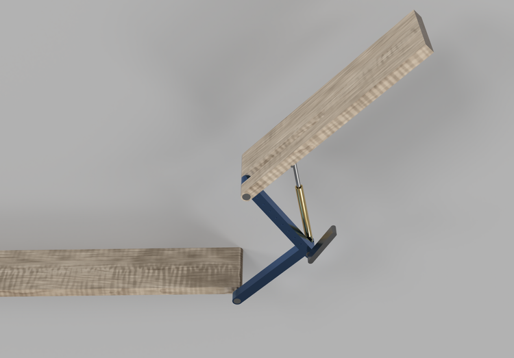
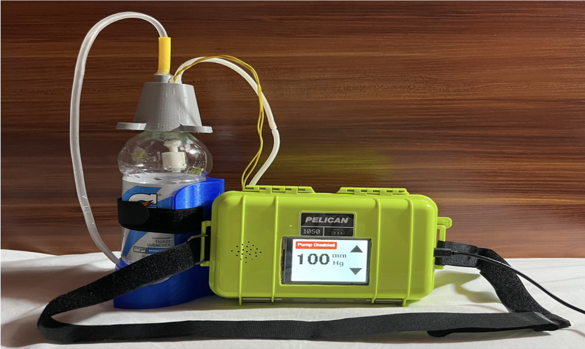
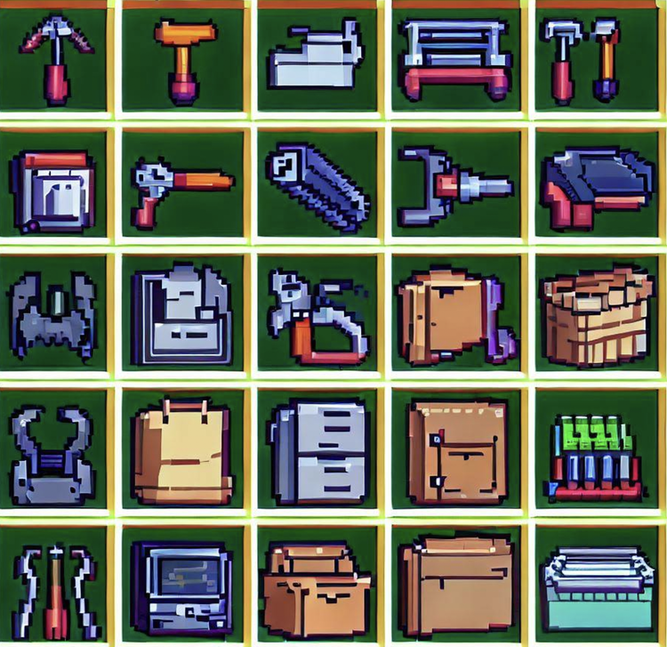

Designed for pediatric cerebral palsy patients, this device assists physical therapists by automating the repetitive hamstring stretch motion. Our team developed and tested multiple prototypes—ranging from low-fidelity cardboard models to a full hydraulic system—refining comfort, portability, and adjustability along the way. Built for function, ease of use, and user-centered care, the final prototype reduces therapist fatigue while improving patient outcomes.
Learn More
Our team designed a portable, low-cost negative pressure wound therapy (NPWT) device to support safe, at-home recovery for patients in low-resource settings. The system promotes wound healing through controlled suction, with an intuitive touchscreen interface and layered design for sanitation, safety, and extended use. Built with affordability and autonomy in mind, it's a step toward expanding access to essential wound care.
Learn More
This course is about turning ideas into real, physical objects. From laser cutting and 3D printing to CNC machining and casting, we learned hands-on skills while building increasingly complex prototypes. Guided by peer feedback and an apprenticeship model, this was more than a class—it was a crash course in becoming a confident, capable maker.
See More